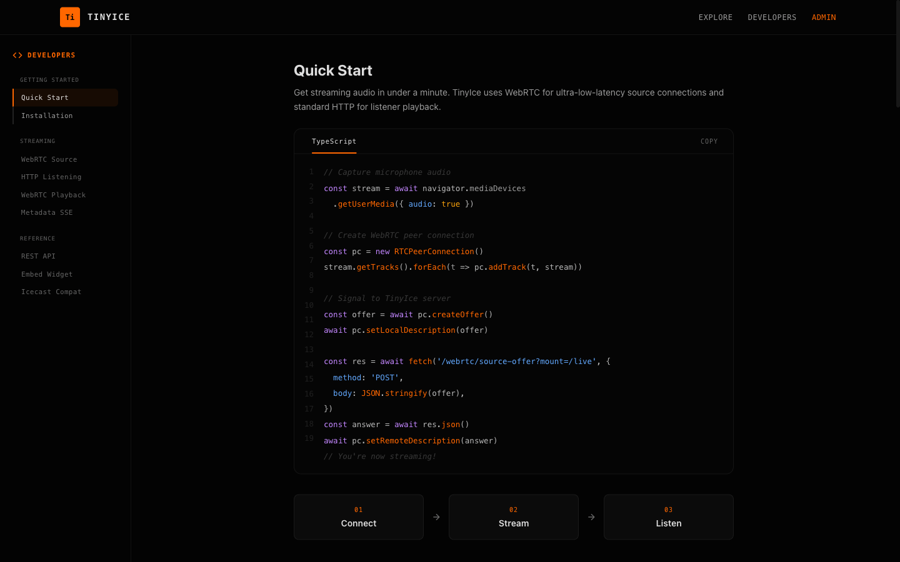

01 · Ingest
Broadcast from what you already use.
TinyIce speaks the protocols your tools speak. BUTT, Mixxx and LadioCast connect over Icecast 2. OBS publishes over RTMP or SRT. A browser tab can broadcast directly via WebRTC. Upstream Icecast streams can be pulled in as relays.
Icecast 2 · RTMP (H.264 + AAC/MP3) · SRT · WebRTC · Relay
